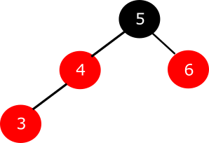

Zadanie 5
Pytanie: Załóżmy, że wstawiliśmy przed chwilą węzeł o kluczu 3.
Czy musimy zrobić coś jeszcze, aby to drzewo czerwono-czarne było prawidłowe?

Odpowiedzi:
A) Nic nie trzeba robić - aktualne drzewo jest prawidłowym drzewem czerwono-czarnym.
B) Musimy zmienić kolory ojca, dziadka oraz wujka węzła o kluczu 3 na przeciwne.
C) Musimy zmienić kolory ojca oraz wujka węzła o kluczu 3 na przeciwne.
D) Musimy zmienić kolor korzenia drzewa na czerwony.